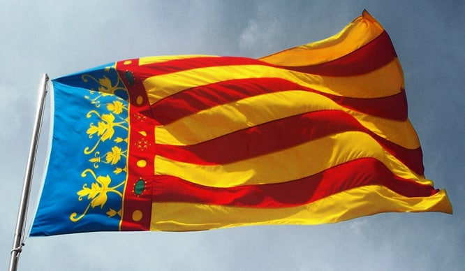

Descubre Valencia

Turismo cultural y gastronómico
Valencia es una ciudad donde convergen historia, arte y gastronomía en un entorno mediterráneo privilegiado. Podrás visitar monumentos emblemáticos como la Ciudad de las Artes y las Ciencias, la Lonja de la Seda o la Catedral con su famoso Miguelete, que reflejan siglos de evolución cultural. Además, pasear por el Barrio del Carmen te permitirá descubrir la esencia histórica y moderna de Valencia con sus museos, galerías y animadas calles.
La gastronomía valenciana ofrece una experiencia única con platos tradicionales y sabores mediterráneos que no debes perderte. Desde la famosa paella hasta tapas locales, el mercado central es un paraíso para los amantes del buen comer. Además, las fiestas populares como las Fallas combinan perfectamente la cultura y la gastronomía en celebraciones llenas de color, música y tradición.
Lugares imprescindibles
- Ciudad de las Artes y las Ciencias
- Catedral y El Miguelete
- La Albufera y sus atardeceres
- Playa de la Malvarrosa
- Mercado Central
Gastronomía local
Prueba la auténtica paella valenciana, la horchata con fartons y, para los más golosos, la fideuà. También son muy típicos otros arroces como el arroz al horno o el arroz a banda, ideales para compartir en familia o con amigos. Si te apetece picar algo, encontrarás tapas como el esgarraet o la titaina, elaboradas con productos frescos de la huerta y del mar. Para terminar, puedes disfrutar de dulces como los buñuelos de calabaza o los turrones artesanales, muy presentes en las fiestas.
Fiestas y tradiciones
- Las Fallas (marzo)
- Semana Santa Marinera
- La Tomatina (Buñol, agosto)